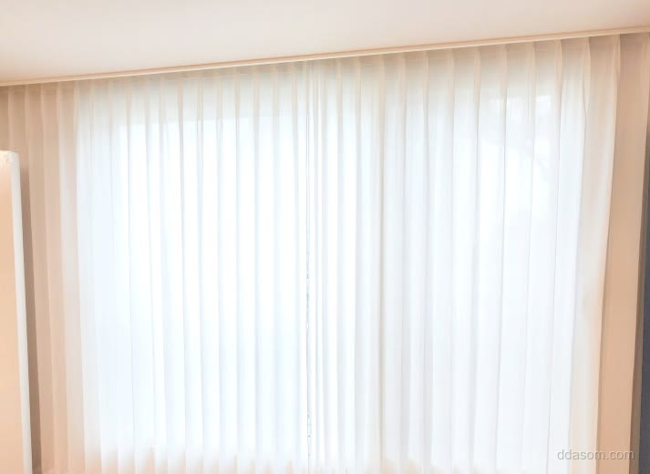
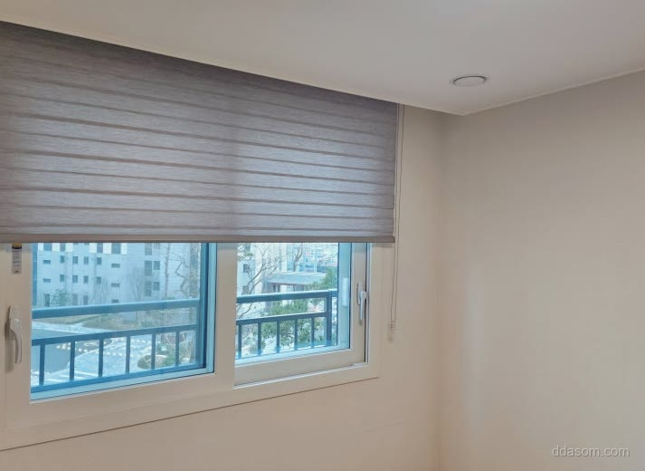

2026년 7월 18일 시공
울진 빌라
헤비쉬폰 커튼·콤비블라인드 시공후기

거실은 밝고 화사하게,
방은 시선과 빛이 조절되게 해달라는 요청이었습니다.
거실에는 헤비쉬폰을 두배나비주름으로 넉넉히 잡았습니다.
한 겹만으로도 비침이 적고,
주름이 도톰하게 서서 볕이 들 때 결이 살아납니다.

안방과 작은방은 그레이 콤비블라인드로 통일했습니다.
슬랫을 겹치면 은은하게 가려지고,
어긋내면 창밖이 트여 시간대에 따라 골라 쓰실 수 있습니다.
밝은 거실과 대비되는 차분한 방 — 한 집에 두 표정이 생겼습니다.
방마다 창 높이가 조금씩 달라 브라켓 위치를 방별로 다시 잡았고,
마감 전 하나씩 올렸다 내려보며 걸림 없이 작동하는지 확인했습니다.